CS184/284A Fall 2026 Homework 3 Write-Up
Link to webpage: cal-cs184-student.github.io/hw3-action-potential-writeup
Link to GitHub repository: github.com/cal-cs184-student/hw3-action-potential
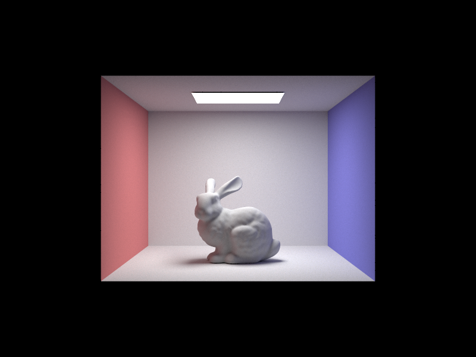
Overview
For this homework I built a physically based path tracer on top of the starter code. It shoots rays from the camera through each pixel, finds the closest triangle or sphere each ray hits, and uses a bounding volume hierarchy so that search stays fast on meshes with hundreds of thousands of triangles. Lighting is estimated with Monte Carlo integration. Direct light comes first (sampling either the hemisphere or the lights themselves). Indirect light comes from recursively bouncing rays around the scene, with Russian roulette deciding when a path stops. Adaptive sampling sits on top of all that and stops sampling a pixel once its estimate is statistically stable.
What surprised me most is how much of rendering is about noise rather than correctness. Hemisphere sampling and light sampling estimate the exact same integral and converge to the same picture, but at the same sample count one is covered in grain and the other is almost clean. Parts 3 through 5 kept coming back to the same problem of where to spend rays so they reduce error. Parts 1 and 2 had to be correct for any of it to work, but the sampling choices decided how long a clean image took.
Part 1: Ray Generation and Scene Intersection
Ray generation
Rendering starts in raytrace_pixel, which is called once per pixel. For each of the ns_aa samples it picks a random point inside the pixel's square (or the exact center if there's only one sample), divides by the image width and height to get coordinates in \([0,1]^2\), and asks the camera for a ray through that point. The radiance from all samples is averaged and written to the pixel.
Inside Camera::generate_ray, I picture a sensor plane sitting one unit in front of the camera at \(z = -1\) in camera space. The field of view tells me how big that plane is: it spans \(\pm\tan(\text{hFov}/2)\) horizontally and \(\pm\tan(\text{vFov}/2)\) vertically. Writing \(h = \tan(\text{hFov}/2)\) and \(v = \tan(\text{vFov}/2)\), a normalized coordinate \((x, y)\) maps linearly from \([0,1]\) onto \([-h, h]\) and \([-v, v]\), which gives the point
\[ \big((2x - 1)\,h,\; (2y - 1)\,v,\; -1\big). \]
That point is also the ray's direction in camera space, since the camera sits at the origin. I rotate it into world space with the camera-to-world matrix c2w, normalize it, start the ray at the camera position, and set min_t and max_t to the near and far clipping distances.
Intersecting primitives
Every primitive has two intersection functions. has_intersection only answers yes or no, which is all a shadow ray needs. intersect also fills in an Intersection record with the hit distance \(t\), the surface normal, the primitive, and its BSDF. The trick that makes "find the closest hit" work is that every ray carries a valid range [min_t, max_t]. Whenever a primitive reports a hit, it shrinks max_t down to that \(t\). Any primitive tested afterwards only counts if it's even closer, so after testing everything the ray is left holding the nearest hit, and nothing ever has to be sorted.
Triangle intersection
I used the Möller-Trumbore algorithm. Any point inside a triangle with corners \(P_1, P_2, P_3\) can be written as \(P_1 + b_1(P_2 - P_1) + b_2(P_3 - P_1)\), and any point on the ray is \(O + tD\). Setting those equal gives three equations (one per coordinate) in three unknowns: \(t\), \(b_1\), and \(b_2\). Solving that system with Cramer's rule and rewriting the determinants as cross and dot products gives a closed form. With \(E_1 = P_2 - P_1\), \(E_2 = P_3 - P_1\), \(S = O - P_1\), \(S_1 = D \times E_2\), and \(S_2 = S \times E_1\): \[ \begin{bmatrix} t \\ b_1 \\ b_2 \end{bmatrix} = \frac{1}{S_1 \cdot E_1} \begin{bmatrix} S_2 \cdot E_2 \\ S_1 \cdot S \\ S_2 \cdot D \end{bmatrix} \] The ray hits the triangle only if all three barycentric coordinates \(b_1\), \(b_2\), and \(b_0 = 1 - b_1 - b_2\) are non-negative (so the point lies inside the triangle) and \(t\) falls inside the ray's current range. If the denominator is close to zero, the ray is parallel to the triangle's plane and I treat it as a miss. On a hit, I reuse the barycentric coordinates to blend the three vertex normals, \(b_0 N_1 + b_1 N_2 + b_2 N_3\). That's why the meshes below look smooth instead of faceted.
Spheres are simpler. Plugging the ray into \(\|P - C\|^2 = R^2\) gives a quadratic \(at^2 + bt + c = 0\) with \(a = D \cdot D\), \(b = 2(O - C)\cdot D\), and \(c = \|O - C\|^2 - R^2\). A negative discriminant means a miss. Otherwise I take the smaller root if it's in range, or the larger one if the ray starts inside the sphere. The normal at the hit point is \((P - C)/R\).
Normal-shaded renders of small scenes (each pixel colored by its surface normal):
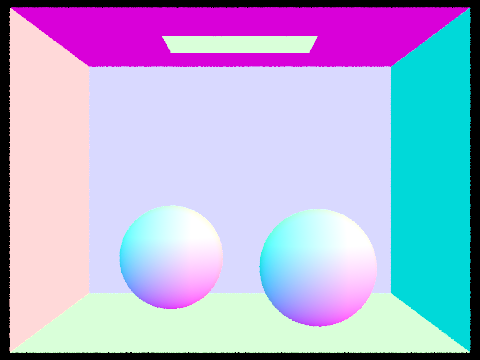 |
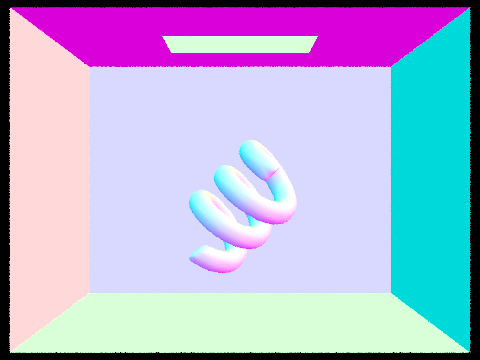 |
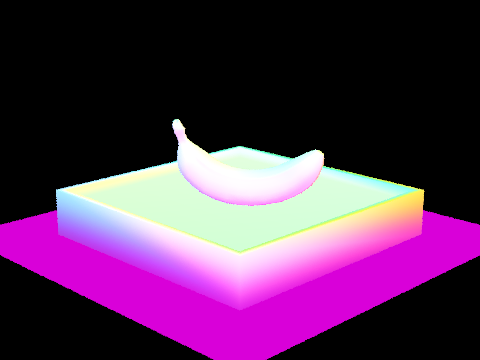 |
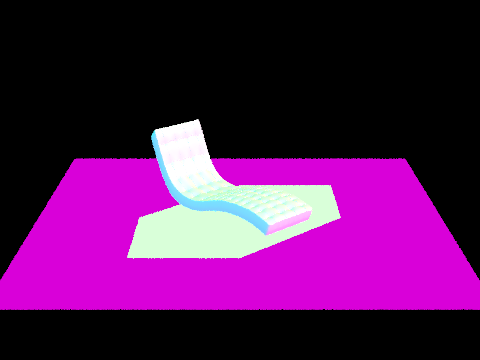 |
Part 2: Bounding Volume Hierarchy
Construction
construct_bvh is recursive. Given a range of primitives, it first builds a bounding box around all of them. If there are at most max_leaf_size primitives (4 by default), the node becomes a leaf that stores that range. Otherwise I split:
- Pick the axis along which the bounding box is longest.
- Compute the average of the primitives' centroids along that axis. That average is the split point.
- Use
std::partitionto move every primitive whose centroid is below the split point to the front of the range, and the rest to the back. - Recurse on the two halves to build the left and right children.
There's one edge case. If every centroid lands on the same side (for example, a bunch of triangles that share a centroid coordinate), partitioning would leave one half empty and the recursion would never end. In that case I fall back to splitting the range in half by count.
I chose the mean centroid because it's cheap (one linear pass) and it follows where the geometry is. Splitting at the midpoint of the bounding box is just as cheap, but it handles clustered meshes badly. If most of a model's triangles sit in one corner of its box, a midpoint split can leave nearly everything on one side. The median gives a perfectly balanced tree but needs a selection step, and the mean was close enough for these scenes. I didn't implement the surface area heuristic. It would probably build a somewhat better tree, but this already gave a huge speedup.
Traversal
To intersect a ray with the BVH, I first test it against the node's bounding box using the slab method. For each axis I compute the \(t\) values where the ray crosses the box's two planes on that axis, which gives an interval per axis. The ray is inside the box where all three intervals overlap, so I take the largest entry time and the smallest exit time. If entry comes after exit, or the overlap doesn't touch the ray's [min_t, max_t] range, the ray misses the box, and everything inside it can be skipped. At a leaf I test each primitive. At an inner node I visit both children. For intersect I can't stop after the first child, because a hit in one box doesn't guarantee nothing closer exists in the other. But since a hit shrinks max_t, the second box often gets rejected right away anyway. has_intersection returns as soon as anything is hit.
Normal-shaded renders of large meshes that would be impractical without the BVH:
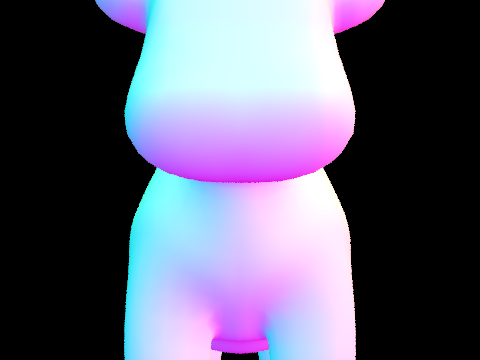 |
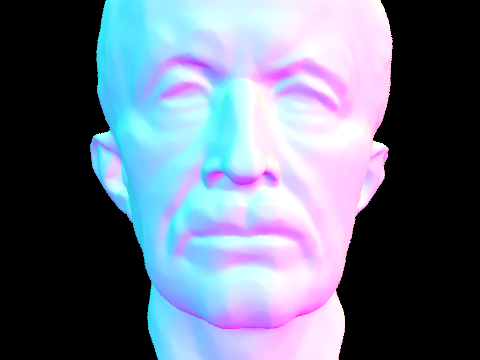 |
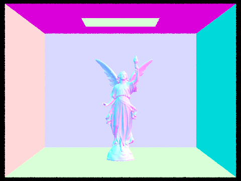 |
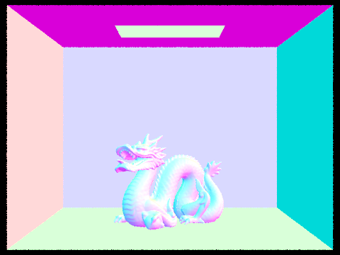 |
Render times with and without the BVH
All timings use the same settings (480×360, 1 sample per pixel, 1 light ray, max depth 1, 8 threads) on my laptop. "No BVH" means I forced the whole scene into a single leaf, so every ray that hits the scene's bounding box gets tested against every primitive.
| Scene | Triangles | BVH build (s) | Render with BVH (s) | Render without BVH (s) | Tests/ray with BVH | Tests/ray without BVH | Speedup |
|---|---|---|---|---|---|---|---|
| cow.dae | 5,856 | 0.0016 | 0.066 | 5.73 | 6.9 | 1,116 | 87× |
| CBbunny.dae | 28,588 | 0.011 | 0.132 | 50.24 | 6.6 | 6,051 | 382× |
| maxplanck.dae | 50,801 | 0.024 | 0.095 | 56.79 | 7.9 | 9,745 | 596× |
| beast.dae | 64,618 | 0.026 | 0.048 | 84.80 | 5.8 | 15,480 | 1,770× |
The BVH turns a render that takes up to a minute and a half into one that finishes in about a tenth of a second. Without it, render time grows roughly in proportion to the triangle count, because every ray that reaches the scene has to be checked against everything. With it, the average number of intersection tests per ray stays between about 6 and 8 no matter how big the mesh is, since each level of the tree throws away a large chunk of the scene. That's the difference between linear and roughly logarithmic cost per ray. The speedup also grows with scene size: 87× for the cow, but almost 1,800× for the beast. One thing I didn't expect: with the BVH, the beast rendered slightly faster than the cow even though it has eleven times as many triangles. Once the tree is in place, cost depends more on how many rays hit the mesh and how its triangles are spread out than on the raw count, and at times this small, run-to-run variation matters too. The tests-per-ray numbers without the BVH are lower than the triangle counts because rays that miss the scene's bounding box skip the test entirely, and shadow rays stop at their first hit. Building the tree costs at most 26 milliseconds here, so it pays for itself almost immediately.
Part 3: Direct Illumination
Uniform hemisphere sampling
Both direct lighting functions start the same way: find the hit point, build a local coordinate frame where the surface normal is the \(z\) axis, and convert the outgoing direction (toward the camera) into that frame. In local space, \(\cos\theta\) for any direction is its \(z\) component.
For hemisphere sampling I take num_lights × ns_area_light samples. Each one picks a uniformly random direction on the hemisphere above the surface, converts it to world space, and shoots a ray from the hit point in that direction. I start that ray at a small min_t so it doesn't immediately hit the surface it's leaving. If the ray hits something, I look up that surface's emission, which is zero for everything except lights. Each sample contributes \(f_r(\omega_i \to \omega_o)\, L_e\, \cos\theta_i / p(\omega_i)\), where the pdf of a uniform hemisphere direction is \(1/2\pi\). The estimate is the average over all samples.
Importance sampling the lights
Light sampling flips the approach. Instead of picking a direction and hoping it hits a light, I loop over the lights and ask each one for a sample with sample_L. It returns a direction toward a random point on the light, the distance to that point, the pdf of that direction, and the incoming radiance. Point lights get one sample, since every sample would be identical. Area lights get ns_area_light. If the direction points below the surface (\(\cos\theta < 0\)) I skip it. Otherwise I cast a shadow ray toward the light with max_t set just short of the light's distance, so the light itself doesn't count as a blocker. If the shadow ray hits anything, that point on the light is hidden and contributes nothing. If not, the sample adds \(f_r\, L_i \cos\theta_i / p(\omega_i)\). I average each light's samples and sum over all lights.
Hemisphere sampling (left) vs. light sampling (right), both at 64 samples per pixel and 32 light rays:
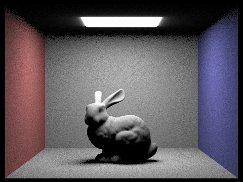 |
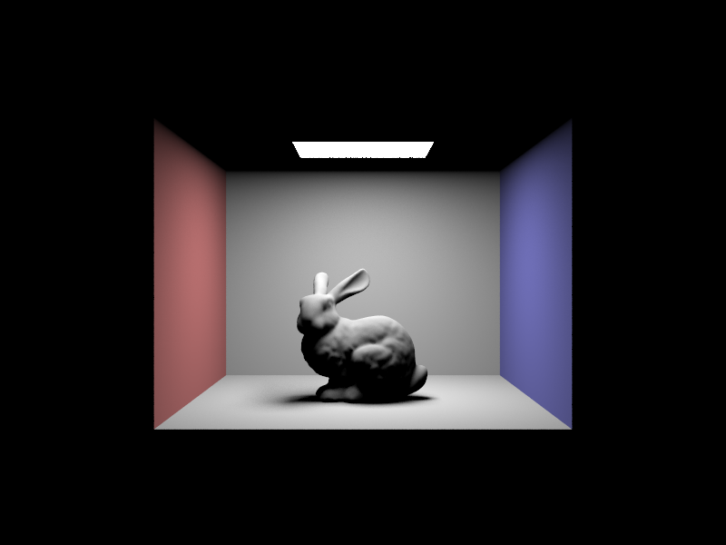 |
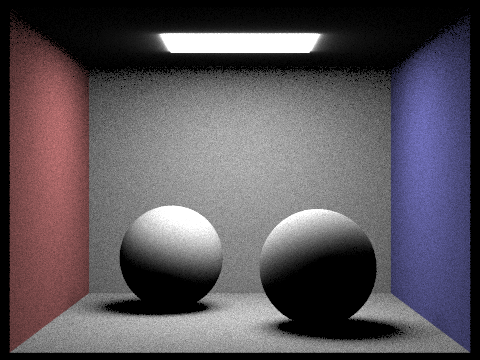 |
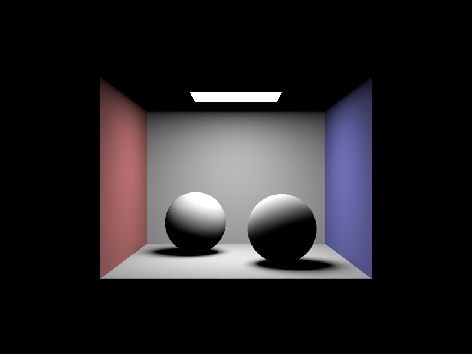 |
Light sampling with 1 sample per pixel and an increasing number of light rays (-l):
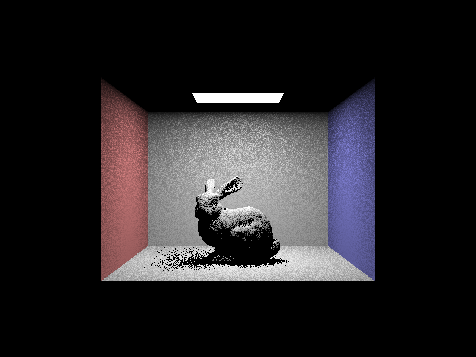 |
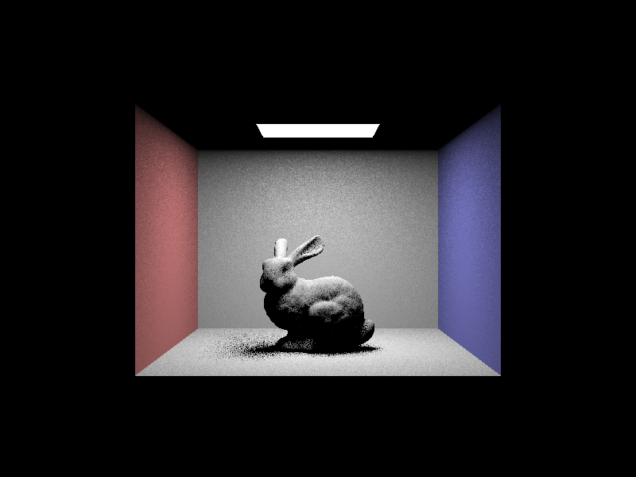 |
With 1 light ray, each pixel's shadow ray either reaches the light or doesn't, so every pixel is roughly all-or-nothing. In the soft shadow under the bunny, where the light is only partly visible, that shows up as salt-and-pepper speckle. At 4 rays the speckle is finer, and by 16 the shadow has a recognizable gradient. At 64 rays the penumbra is a smooth falloff from the contact shadow under the bunny out to the lit floor. The fully lit and fully shadowed areas look about the same at every setting. Those pixels get the same answer from every shadow ray, so extra rays only help where the light is partially blocked.
Comparing the two methods
At the same sample count, light sampling is far less noisy. The ceiling light covers only a small part of the hemisphere above most points, so most uniformly sampled directions miss it and contribute zero, and the few that hit contribute a lot. Averaging lots of zeros with occasional big values is what produces high variance, and the hemisphere renders are grainy everywhere, even on walls that are fully lit. With light sampling, every sample is aimed at the light and comes back zero only when something blocks it. Fully lit regions come out nearly noise-free, and the remaining noise is confined to penumbras, where visibility really does vary. The two images also differ near the lamp. In the hemisphere renders the ceiling around the light picks up a glow, because those rays can hit the light from the side. The light sampler treats the area light as emitting only downward, so the ceiling stays dark. Apart from that, both converge to the same lighting. Light sampling gets there with far fewer rays.
Part 4: Global Illumination
Indirect lighting
est_radiance_global_illumination traces the camera ray. If it misses the scene it returns black. Otherwise it returns the surface's own emission (zero-bounce light) plus at_least_one_bounce_radiance, which does the recursion. At each hit, that function:
- Computes direct lighting at the hit point using the Part 3 estimator. When bounces are being accumulated, this gets added to the result.
- Stops if the ray's remaining depth is 1. In the unaccumulated mode this is the only place direct light gets added, so the output is only the light that took \(m\) bounces.
- Otherwise flips a Russian roulette coin to decide whether to keep going (see below).
- Samples a new incoming direction from the BSDF with
sample_f, which also returns the BSDF value and the pdf of that direction. - Traces a ray in that direction with depth reduced by one. If it hits something, recurses there and adds the returned radiance weighted by \(f_r \cos\theta / p\).
Russian roulette is what keeps the recursion finite without biasing the image. After the first indirect bounce, each path continues with probability 0.65. When it continues, its contribution is divided by 0.65, so the expected value doesn't change even though most deep paths get cut off. I only apply it after the first indirect bounce and only when accumulating, which keeps the single-bounce images below exact and guarantees every pixel gets at least one bounce of indirect light.
Global illumination (direct plus indirect) at 1024 samples per pixel:
Direct illumination only vs. indirect illumination only, CBbunny.dae, 1024 samples per pixel:
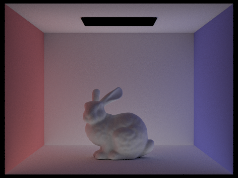 |
The direct-only image is what Part 3 produced. Surfaces facing the light are bright, the ceiling is completely black because the light can't see it, and the shadow under the bunny is dark all the way down. The indirect-only image is close to the opposite. The light itself is black, since emission that reaches the camera directly counts as direct light. The ceiling, which gets no direct light at all, is lit by light bouncing up off the floor. The bunny's shadow is mostly filled in, and the walls' colors bleed onto their surroundings: the floor next to the left wall turns pink and the floor next to the right wall turns blue. Adding these two images together gives the global illumination render above.
Individual bounces
Only the \(m\)th bounce of light (isAccumBounces = false), CBbunny.dae, 1024 samples per pixel:
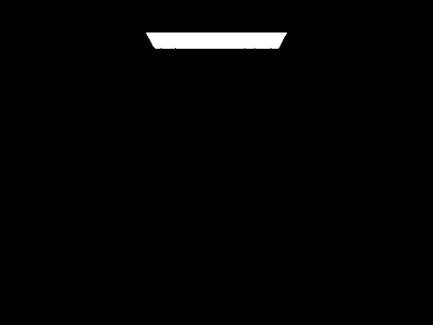 |
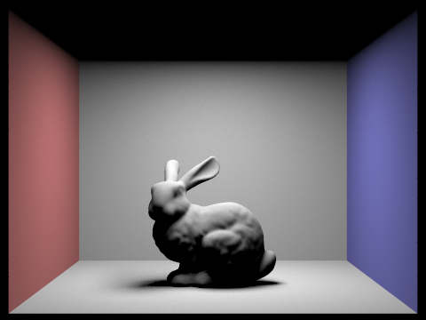 |
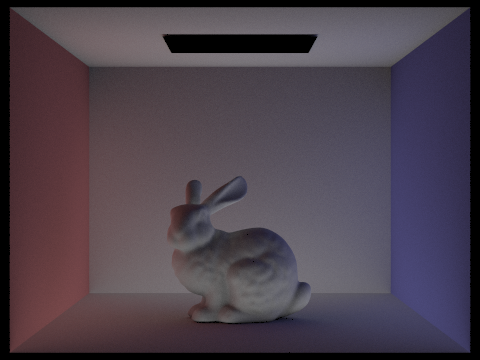 |
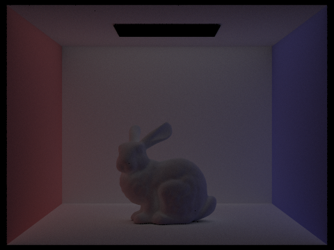 |
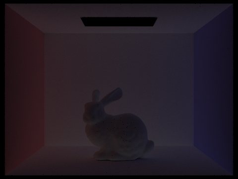 |
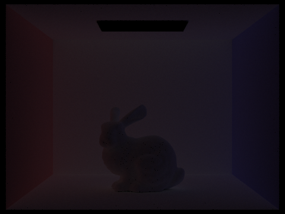 |
The \(m = 0\) image is only the light source, the one surface that emits. \(m = 1\) is direct lighting. The 2nd bounce is light that hit one other surface before landing on the surface the camera sees. That's what lights the ceiling and fills in the bunny's shadow, and it's where most of the color bleeding comes from: the floor near each wall takes on that wall's color, and the bunny gets lit from below by light coming off the floor, which direct light can't do. The 3rd bounce looks like a dimmer, softer version of the 2nd. By then the light has scattered so many times that it arrives from nearly every direction, so the image is almost flat and the shadows are close to gone. Each bounce is darker than the last because every diffuse surface absorbs some of the light that hits it, and by \(m = 4\) and \(m = 5\) there's very little left. A rasterizer only computes something like the \(m = 1\) image, shading each surface from the light directly, and fakes everything else with a constant ambient term. The 2nd and 3rd bounces are what a rasterizer can't do: lit ceilings, shadows that aren't pure black, and color picked up from nearby surfaces, all computed from the actual scene instead of approximated.
Accumulated bounces
All bounces up to \(m\) added together (isAccumBounces = true), CBbunny.dae, 1024 samples per pixel:
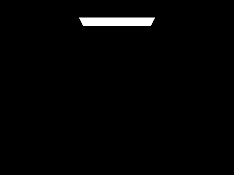 |
||
Accumulating adds up every bounce through the max depth, so each image here is the one before it plus the matching image from the single-bounce row. Depth 0 is only the light and depth 1 is direct lighting. Going from depth 1 to 2 is the biggest change of the whole series: the ceiling lights up, the shadow under the bunny softens, and the walls' colors spill onto the floor. Depth 3 brightens the scene again, but by less, and the change from 4 to 5 is hard to see at all, which matches how dim the 4th and 5th bounces are on their own. The two rows together show both sides of it. The unaccumulated images show where each bounce's light lands, and the accumulated ones show how quickly those contributions add up to a converged image.
Russian roulette
Accumulated renders with Russian roulette, CBbunny.dae, 1024 samples per pixel:
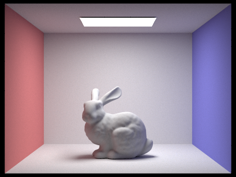 |
These are the accumulated renders, since my accumulated mode always uses Russian roulette after the first indirect bounce. Max depth 100 looks almost identical to max depth 4 or 5. The deep bounces carry so little energy that adding them barely changes anything, and Russian roulette ends almost every path long before it gets that far. With a continuation probability of 0.65, the chance a path survives 10 more bounces is under 2%. That keeps the cost reasonable too. The max depth 100 render took about 16 minutes, against about 6 minutes for max depth 5, nowhere near 20 times as long. Because the paths that survive are scaled up by 1/0.65, cutting paths short doesn't make the image darker.
Samples per pixel
CBspheres_lambertian.dae with 4 light rays and max depth 5, at increasing samples per pixel:
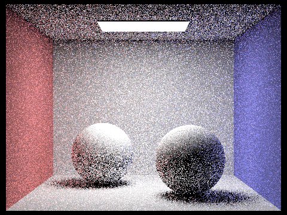 |
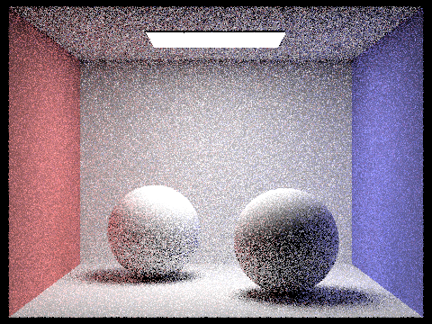 |
|
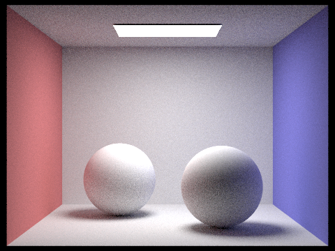 |
||
 |
At 1 sample per pixel the image is mostly speckle. You can see the shapes, but every pixel is one random path, and paths that happened to find the light are bright while their neighbors are dark. The ceiling is the worst part, since it's lit only indirectly and needs a path to bounce off the floor or walls and then find the light. Each doubling of the sample count visibly smooths things out, but the improvement slows down. Monte Carlo noise falls off with the square root of the sample count, so cutting the noise in half takes four times as many samples. By 64 samples the image reads clearly but still has visible grain on the ceiling and in the shadows. At 1024 samples the noise is mostly gone: soft shadows under both spheres, a smoothly lit ceiling, and red and blue light bleeding onto the sides of the spheres from the nearby walls.
Part 5: Adaptive Sampling
Spending the same number of samples on every pixel is wasteful. A pixel on a directly lit wall converges after a few dozen samples, while a pixel in a soft shadow or on the indirectly lit ceiling needs many more. Adaptive sampling keeps sampling each pixel only until its estimate is stable enough.
In raytrace_pixel, I keep two running sums for each pixel over the samples taken so far: \(s_1 = \sum_k x_k\) and \(s_2 = \sum_k x_k^2\), where \(x_k\) is the illuminance of sample \(k\). These are enough to get the mean and variance at any point without storing individual samples:
\[ \mu = \frac{s_1}{n}, \qquad \sigma^2 = \frac{1}{n-1}\left(s_2 - \frac{s_1^2}{n}\right). \]
Every samplesPerBatch samples I compute \(I = 1.96\,\sigma/\sqrt{n}\), the half-width of a 95% confidence interval for the pixel's true mean. If \(I \le \text{maxTolerance}\cdot\mu\), I'm 95% confident the pixel is within the tolerance of its true value, and I stop. Otherwise I keep going until I hit the maximum sample count. Checking only once per batch keeps the overhead small. The number of samples each pixel used goes into sampleCountBuffer, which is what the sampling rate images visualize. Pixels that are completely black (the background) have \(\mu = 0\) and \(\sigma = 0\), so they stop after the first batch.
Both scenes below use a maximum of 2048 samples per pixel, batches of 64, a tolerance of 0.05, 1 light ray, and max depth 5. In the rate images, red means a pixel used close to the maximum and blue means it stopped early.
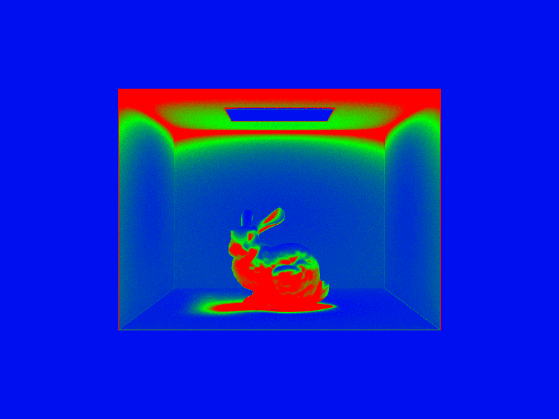 |
|
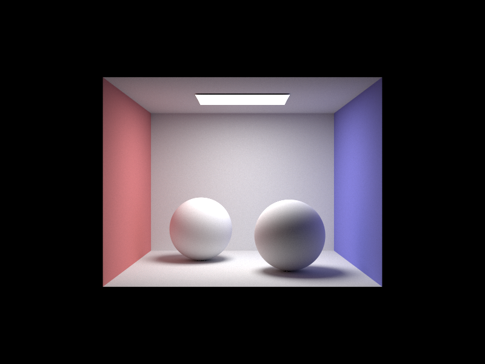 |
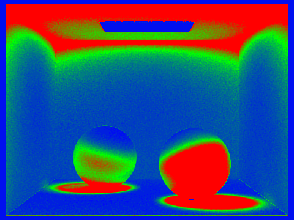 |
The rate images show the samples going where I'd expect. The ceiling turns red, especially at its edges and corners, because it only gets light indirectly and its estimates vary a lot from path to path. The contact shadows under the bunny and the spheres are red, as is the shadowed side of the bunny, since those pixels are partly visible to the light and the shadow rays disagree. The walls and floor out in the open, which are directly lit and smooth, stay blue and green and stop early. The empty background is solid blue. The final renders come out clean even though most of the image stopped well short of 2048 samples.
(Optional) Part 6: Extra Credit Opportunities
I didn't attempt any extra credit for this homework.
AI use acknowledgement
TODO: describe how you used AI tools for this homework, in your own words. The course requires this section.